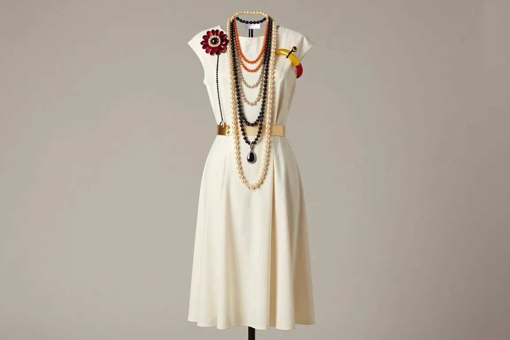

Jewels made to go with a dress, not to hold value. They are glass pearls, paste, gilt metal, Bakelite and chrome, worn in ropes and clusters by day and night, and chosen for the look.

Core thesis
A jewel is an accessory to the outfit: it need not be real, because the effect counts for more than the value.
Design principles
Make the piece from cheap, bright materials: glass pearl, paste, gilt brass, celluloid, Bakelite and chrome.
Wear the piece in quantity: a rope of 120 to 200 cm of glass pearls, or six bracelets on one arm.
Copy a real jewel in size and form, then change one thing, such as a cross, a coin or a colour. The change makes it read as a joke on wealth.
Mix real and false pieces on the same person, and make no secret of which is which.
Change the jewel each season to match the new colour and cut of the dress.
Plate the base metal with gold, silver or chrome by the electric bath, and keep the plate thin and bright.
Cast, stamp or mould the parts in large runs from one die, and sell them at a low price.
Make a large piece: a brooch of 6 to 10 cm or a cuff of 4 to 6 cm width.